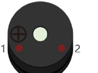
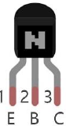

ESP32-S3 board
The brain that runs your uploaded sketch.
TinySkiff ESP32-S3 Lab · Day 10 of 30
Today the board makes sound. You wire an active buzzer through a small transistor, add a push button, and upload a sketch that beeps the instant you press — a doorbell you built yourself. The beep is worth understanding: sound is air pushed rapidly back and forth, and how many pushes a second is the pitch you hear. An active buzzer fixes that number itself; a passive buzzer hands it to you to set.
TSK-DAY10-BUZZER
Hand this to an agent so it can pull the lesson packet and coach you step by step.
01 First, know the pieces
Nine things, most of them tiny. Tap Define on any part you haven't met — the answer opens as a field note you can read and dismiss without losing your place.
The brain that runs your uploaded sketch.

Spreads the pins into rows you can reach and label.

Makes one fixed tone whenever it gets power.

A tiny switch the pin controls to drive the buzzer.

A four-pin switch that closes the circuit when pressed.

Sits between the pin and the transistor's base to keep the current gentle.
Hold the button's pin at a steady level until you press.

Temporary, solder-free connections.

Uploads the sketch to the board.
02 Make the physical circuit
The official Freenove diagram is your chart — schematic on top, the same circuit built on a breadboard below. Click it to enlarge. Each connection tells you where the wire goes and why.
Mind the transistor's legs. The transistor's three legs have their own jobs — emitter, base, and collector — so get them the right way round against the chart. Unplug USB before you move any wire.
03 One action at a time
This is the main path — you can finish the day without opening a single field note. Tap each step as you go to keep your place.
Seat the ESP32-S3 on the GPIO extension board and keep USB unplugged while you wire.
Place the transistor on the breadboard and note its three legs — emitter, base, and collector.
Wire the buzzer's + pin to the 5V rail and its other pin down to the transistor.
Connect the transistor's base to GPIO 14 through the 1 kΩ resistor.
Wire the push button so one side reaches GPIO 21, then add its 10 kΩ pull-up to 3.3V.
Compare every wire to the chart before you plug in USB.
Open Sketch_06.1_Doorbell.ino in Arduino IDE and upload it.
Press the button and listen.
04 Read just enough code
The whole sketch is short. Two lines set the pins up; the loop just asks the button and answers with the buzzer. Switch to MicroPython if you'd rather see the same idea in Python — the wiring never changes.
#define PIN_BUZZER 14
#define PIN_BUTTON 21
void setup() {
pinMode(PIN_BUZZER, OUTPUT);
pinMode(PIN_BUTTON, INPUT);
}
void loop() {
if (digitalRead(PIN_BUTTON) == LOW) {
digitalWrite(PIN_BUZZER, HIGH); // pressed -> beep
} else {
digitalWrite(PIN_BUZZER, LOW); // released -> silent
}
}digitalRead(PIN_BUTTON) == LOWTrue only while the button is held — a press pulls GPIO 21 LOW. digitalWrite(PIN_BUZZER, HIGH)Sends the pin HIGH, which switches the buzzer on through the transistor. ledcWriteTone(channel, freq)The passive-buzzer variant (Sketch_06.2_Alertor) uses ledcWriteTone to choose the pitch and sweep a siren. Optional side path · same circuit
button = Pin(21, Pin.IN, Pin.PULL_UP)
activeBuzzer = Pin(14, Pin.OUT)
if not button.value():
activeBuzzer.value(1)
else:
activeBuzzer.value(0)Pin(21, Pin.IN, Pin.PULL_UP)Reads GPIO 21 as an input with a built-in pull-up — the same job the 10 kΩ resistor does in hardware.activeBuzzer = Pin(14, Pin.OUT)Drives GPIO 14, which switches the buzzer through the transistor.Same pins, same wiring. The passive-buzzer version uses PWM(Pin(14), 2000) and .freq(...) to pick the pitch. Run it in Thonny if MicroPython is set up; otherwise skip it — it should never block the Arduino-first path.
05 Understand, don't memorise
Today's doorbell uses an active buzzer, which plays one fixed note. The idea worth carrying is what that note actually is, because the passive buzzer later lets you choose it. Sound is moving air, and the pitch you hear is a number.
A buzzer holds a thin disc that snaps back and forth, shoving the air in front of it. Each full back-and-forth is one cycle, and your ear reads a stream of those pushes as a sound rather than separate clicks.
How many cycles happen each second is the frequency, measured in hertz. More cycles a second arrives as a higher note, fewer as a lower one, so the pitch is simply a count you can name and set.
An active buzzer carries a tiny oscillator inside that vibrates the disc at one built-in rate, so bare power plays one set note. That is the beep in today's doorbell, and why the pin only has to switch it on or off.
A passive buzzer has no oscillator and stays silent on steady power. The pin has to switch it on and off itself, and how fast it does that becomes the pitch. The frequency you drive it at is the frequency you hear.
A musical note is a named frequency: 262 Hz is a middle C, 392 Hz is the G above it, 440 Hz is the A an orchestra tunes to. Feed those numbers to a passive buzzer and it plays them; tone() generates exactly that.
on/off cycles per second = frequency = pitch (Day 7 varied on-time for brightness; here the rate sets the note)
Day 7's pin also flicked far too fast to watch, and its duty cycle, the share of each cycle held on, set the brightness. Here the duty stays near half and the frequency is the knob, so the same fast-switching pin makes pitch instead of light.
Its built-in oscillator fixes its own pitch, so switching it faster from the pin just chops the same note on and off. Only a passive buzzer hands you the frequency, which is why melodies and sirens need the passive kind.
The pin still can't supply the buzzer's current, so it switches a transistor and the transistor drives the 5V buzzer. The pin decides on or off; the transistor does the lifting.
06 Know it worked
Nothing prints to the screen today — the proof is the sound under your finger.
An active buzzer plays one fixed tone — choosing the pitch is the passive-buzzer variant's job.
07 Make the idea yours
The doorbell proved a pin can make sound. This proves the pitch is a number you choose. Swap in the passive buzzer, drive it with tone() the way Sketch_06.2_Alertor.ino does, and hear frequency become pitch in your own ear. It fits inside today's session.
Swap in the passive buzzer and, using tone() on GPIO 14, sound 262 Hz, then 392 Hz, then 523 Hz for about half a second each. Those are a middle C, the G above it, and the C above that — each higher frequency is an unmistakably higher note. That mapping from frequency to pitch is the whole idea of the day.
Now play 330 Hz, 392 Hz, then 523 Hz in a row with short gaps between them — a three-note rising figure you can hum back. You have turned bare numbers into music. Try the same on the active buzzer and it can't follow: its oscillator only ever knows its one note.
08 Learn it with a hand on the tiller
Every lesson ships with a code and a machine-readable packet, so an agent can guide you with full context.
TSK-DAY10-BUZZER
How the agent should behave: guide one physical connection at a time and wait for confirmation, but make sure the learner leaves understanding that pitch is frequency and why an active buzzer plays one fixed note while a passive buzzer can be tuned. Always check transistor orientation, wiring, board, port, and USB before code.